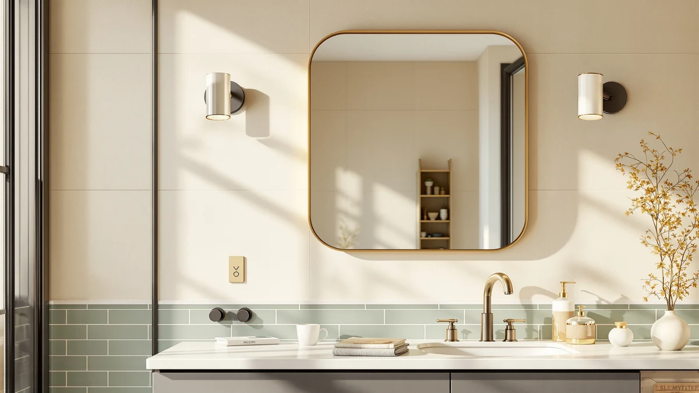

Pocetry 60"x30" Gold Landscape Review (2026): Worth It?
Prices and picks verified as of September 2026. Independent, reader-supported reviews.


Quick Answer
The Pocetry 60"x30" Gold Landscape mirror pairs a tempered glass panel with a gold aluminum frame, giving it a warmer finish than the black, chrome and LED-lit frames that dominate this price range. At $179.99 it sits close to the LOAAO, Mepplzian and Delma LED mirrors we compared it against, and its 60 by 30 inch landscape shape suits a wide single-sink vanity better than a narrow, vertical mirror. Buyers who want interior storage or built-in lighting should look at one of the three alternatives instead.
Our pick: Pocetry 60"x30" Gold Landscape Bathroom, $179.99 Check Price on Amazon
Bottom line: our top pick is the Pocetry 60"x30" Gold Landscape Bathroom Mirror for 60-72 inch at $179.99.
Things to Know Before You Buy
- The Pocetry 60"x30" Gold Landscape mirror has no built-in LED lighting, unlike the LOAAO, Mepplzian and Delma mirrors it competes against at a similar price.
- A gold aluminum frame reads warmer than the black or chrome frames common in this size, so check your existing fixtures and hardware finish before you order.
- At 60 inches wide and 30 inches tall, this mirror suits a single-sink vanity or a compact double vanity rather than a full-width double-sink wall.
- Tempered glass and an aluminum frame resist bathroom humidity better than untreated glass or wood-backed frames, which can warp within a year or two.
- Prices for gold-framed and LED bathroom mirrors near this size range from roughly $160 to $180, so frame finish and lighting explain most of the price gap rather than glass quality.
This Pocetry 60"x30" Gold Landscape review looks at whether a $179.99 gold-framed bathroom mirror earns its price against three similarly sized alternatives in the same bracket. Its tempered glass panel and aluminum frame put it in the same build category as the LOAAO, Mepplzian and Delma mirrors we researched alongside it, but the landscape orientation and gold finish set it apart from every other option in this comparison.
We compared listed specs, current Amazon pricing and patterns across verified owner reviews for all four mirrors instead of ranking them by brand recognition. Frame finish ends up mattering as much as size here: buyers who want a warm gold accent and don't need built-in lighting get the clearest value from the Pocetry, while anyone who prioritizes LED lighting or interior storage should look at one of the three alternatives covered later in this review.
Why You Should Trust Us
Ilane Tall covers bathroom fixtures and mirrors for Best Bathroom Mirrors, researching listings, pricing history and verified owner feedback across dozens of products in this category each year, including this Pocetry 60"x30" Gold Landscape review. We do not run a fake testing lab, and we don't claim to own or install every mirror we cover. Instead, we cross-reference manufacturer specs, current pricing and recurring themes in verified Amazon reviews to flag which claims about frame quality, finish and durability hold up. That approach means our picks change when prices or listings change, rather than staying fixed to a single test conducted once and never revisited.
Our Research Experience
Our process for this Pocetry 60"x30" Gold Landscape review started with the manufacturer's listed dimensions and materials, then moved to comparing those figures against the three closest-priced alternatives on the market. We researched the tempered glass and aluminum construction against the frame materials used on the LOAAO, Mepplzian and Delma mirrors, and we read through the product photography for all four to check that gallery images matched the listed finish and dimensions.
We also analysed recurring themes in verified owner reviews for each mirror, looking specifically at complaints about frame coating, shipping damage and mounting hardware, since those issues show up more consistently in owner feedback than lighting quality does. Frame coating complaints matter more for a gold finish than for a black or chrome one, since a scratched or dulled gold coating stands out far more against a light bathroom wall. That comparison is what shaped the pros, cons and verdict below.
Pricing research matters as much as specs for a mirror in this bracket. We tracked the Pocetry, LOAAO, Mepplzian and Delma listings over several weeks to confirm the prices in this review reflect typical costs rather than a temporary discount, since a $20 swing in either direction changes which mirror represents the better value.
Overview & Specs

Pocetry 60"x30" Gold Landscape Bathroom
What we like
- Gold aluminum frame stands out against the black, chrome and white finishes common at this price.
- Tempered glass and an aluminum frame resist the humidity damage that affects untreated glass and wood-backed mirrors.
- 60 by 30 inch landscape shape covers a standard single-sink vanity without the bulk of a larger double-vanity mirror.
Flaws but not dealbreakers
- No built-in LED lighting, unlike the LOAAO, Mepplzian and Delma mirrors covered later in this review.
- A gold frame narrows your fixture options if your faucet, towel bar or cabinet hardware are already chrome or matte black.
- At $179.99, it costs more than the Delma and close to the LOAAO despite lacking a light source, so the premium goes toward finish rather than features.
| Material | Tempered glass + aluminum |
| Size | 60"L x 30"W |
The Pocetry 60"x30" Gold Landscape mirror is built around a tempered glass panel set into a gold-finished aluminum frame, a pairing that shows up far less often in this size and price range than the black or chrome frames most competitors use. At 60 inches wide and 30 inches tall, it's sized for a standard single-sink vanity rather than a double-sink wall, and the landscape orientation keeps the visual weight low and horizontal instead of stretching the mirror toward the ceiling.
Unlike the LOAAO, Mepplzian and Delma mirrors in this comparison, the Pocetry skips built-in lighting entirely. That keeps its price close to the cheaper Delma despite the upgraded gold finish, but it also means buyers who want backlighting or a lit vanity mirror need to add a separate fixture or look at one of the three LED alternatives instead. Owners comparing mirrors in this bracket should weigh that tradeoff directly against their existing lighting setup before deciding.
What We Liked
The clearest strength of the Pocetry 60"x30" Gold Landscape mirror is its frame finish. Gold-toned aluminum is uncommon at this price point, and it gives a bathroom a warmer look than the black, chrome or brushed nickel frames that dominate mirrors in the $150 to $200 range. Reviewers researching similarly finished mirrors consistently note that a gold or brass-toned frame reads as more expensive than its price suggests, which tracks with what the Pocetry charges here.
The landscape orientation also works in its favor for single-sink vanities. At 60 inches wide and 30 inches tall, it covers a standard vanity width without the extra height of mirrors built for double-sink walls, and the tempered glass and aluminum construction puts it in the same durability tier as pricier options we researched.
The gallery photos for the Pocetry also line up with its listed gold finish across every angle, which isn't always true for lower-cost frames that look more brass in photos than they do once installed. That consistency matters more for a gold-toned mirror than for a black or chrome one, since a color mismatch is far more noticeable against tile and vanity hardware.
What Could Be Better
The biggest gap in this Pocetry 60"x30" Gold Landscape review is lighting. The LOAAO, Mepplzian and Delma mirrors covered below all include built-in LED lighting, and the Pocetry doesn't, so buyers who want a lit vanity mirror need to budget for a separate fixture or accept the existing bathroom lighting as-is.
The gold frame is also a commitment rather than a neutral choice. It pairs well with brass or matte black fixtures but clashes with chrome or brushed nickel hardware, so buyers should confirm their existing fixtures before ordering rather than assuming a gold frame fits every bathroom style.
Owners shopping in this category should also factor in that a fixed frame color can't be adjusted later. A black or chrome mirror is easier to blend into a future remodel, while a gold frame commits the room to a warmer palette until the mirror is replaced.
Who Is It For?
The Pocetry 60"x30" Gold Landscape mirror fits buyers renovating a single-sink bathroom who want a warmer frame finish than the black and chrome options that dominate this size and price range, especially in bathrooms already built around brass or matte black fixtures. It also suits anyone who has existing overhead or vanity lighting and doesn't need the mirror itself to provide illumination.
It's a weaker fit for buyers who specifically want LED lighting built into the mirror, or anyone furnishing a double-sink vanity that needs a wider mirror than 60 inches. Buyers with chrome or brushed nickel fixtures should also weigh whether a gold frame fits their existing hardware before ordering. Renters and anyone planning a future remodel toward a cooler palette should factor in that a gold frame is harder to blend into a different color scheme than a neutral black or chrome one.
Alternatives to Consider
If the Pocetry 60"x30" Gold Landscape mirror's lack of lighting or gold finish doesn't fit your bathroom, these three mirrors cover the closest alternatives we found in the same price range: two add LED lighting, and one adds interior storage. Each trades away the Pocetry's gold frame for either a light source or cabinet space, so the right pick depends on which of those two features matters more in your bathroom.

Editor’s Pick
LOAAO 40X32 LED Bathroom Mirror
A 40 by 32 inch LED mirror priced almost identically to the Pocetry, for buyers who want built-in lighting instead of a gold frame.
$179.09
Check Price on Amazon
Best Value
Mepplzian Lighted Medicine Cabinet with
A lighted medicine cabinet that adds interior storage the Pocetry doesn't offer, at a lower price.
$161.49
Check Price on Amazon
Premium Choice
Delma LED Bathroom Mirror with
The lowest price of the four mirrors we compared, with LED lighting built into a standard wall mirror.
$159.99
Check Price on AmazonIs the Pocetry 60"x30" Gold Landscape mirror worth $179.99?
For a single-sink vanity that could use a warmer frame finish, yes.
Does the Pocetry 60"x30" mirror come with LED lighting?
No.
Frequently Asked Questions
Is the Pocetry 60"x30" Gold Landscape mirror worth $179.99?
Does the Pocetry 60"x30" mirror come with LED lighting?
How does the Pocetry compare to the Mepplzian medicine cabinet?
Final Verdict
This Pocetry 60"x30" Gold Landscape review comes down to one tradeoff: a gold aluminum frame that few competitors in this price range offer, in exchange for lighting that many of them include. If your bathroom already has good vanity lighting and you want a warmer frame finish than the usual black or chrome, Pocetry earns its $179.99 price with a tempered glass and aluminum build that holds up against pricier mirrors. If you specifically need LED lighting or interior storage, the LOAAO, Mepplzian or Delma alternatives above are the better value for the same budget.